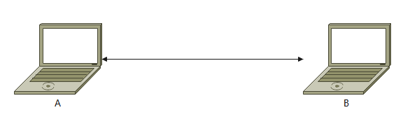
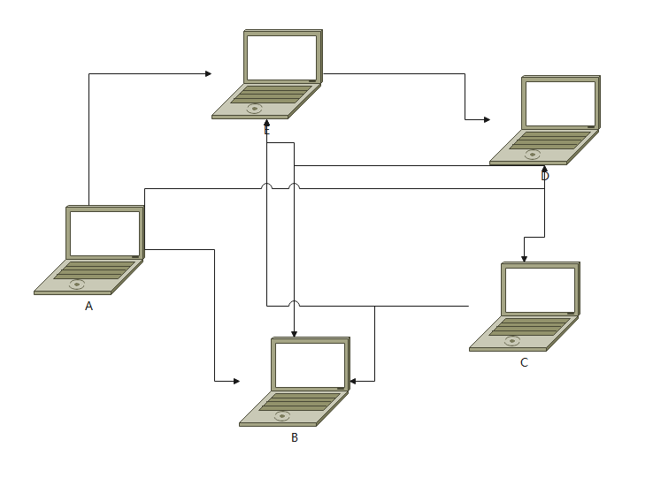
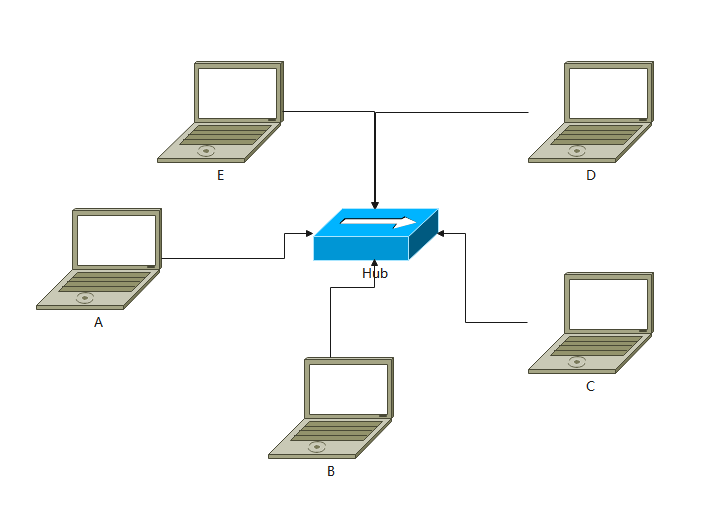
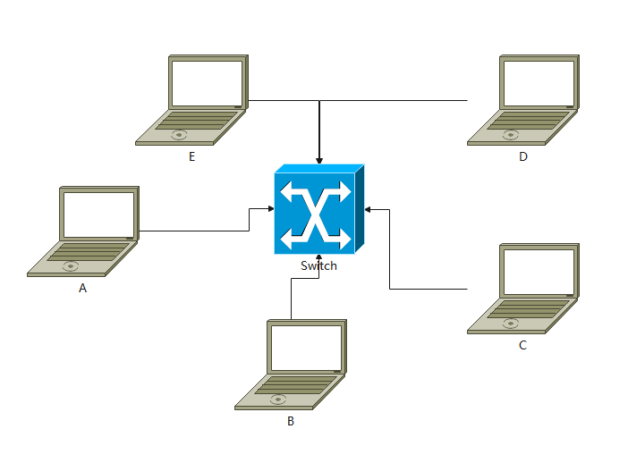

计算机网络整体理解
计算机网络是指将地理位置不同的具有独立功能的多台计算机及其外部设备，通过通信线路连接起来，在网络操作系统，网络管理软件及网络通信协议的管理和协调下，实现资源共享和信息传递的计算机系统。
计算机网络主要是由一些通用的、可编程的硬件互连而成的，而这些硬件并非专门用来实现某一特定目的（例如，传送数据或视频信号）。这些可编程的硬件能够用来传送多种不同类型的数据，并能支持广泛的和日益增长的应用。
计算机网络如何理解
广义上，计算机网络也称计算机通信网。计算机网络是计算机与计算机相互通信的一个通路。最复杂的网络也是从1对1的网络上去理解。
理解计算机网络应该从小到大，从1对1到n对n去理解。同时，计算机网络也是通过重要的设备运作起来的，所以结合以上两点理解计算机网络，会发现一个全新的角度。
简单的计算机网络
在信息课上，两个小伙伴之间想玩红色警戒，他们想联机打电脑，最简单的网络是用一条网线（物理）将两台计算机相互连接起来，这样就实现了两台计算机之间的相互通信。

连接成功后，就可以在player list中搜索到小伙伴了
这个过程是通过电平去发送的，也就是010101。那么这两个小伙伴，我们用A和B来标记它，称为标识。
但是只有两个人打电脑，不一会就腻了，这时候想拉上课上的小伙伴一起玩红色警戒。当然，最直接的办法也还是用网线将所有的电脑连在一块。

可以看到，5台电脑，需要的线已经很多了，要是10台，20台，30台呢？就算有这么多线，明目张胆这么接线，不怕被老师发现扣分吗？
这个时候，就需要引入集线器了
集线器（Hub）
班里的小伙伴从教室里找出来集线器，将这5台计算机连接了起来，并且将集线器偷偷藏了起来，这样小伙伴们就可以很愉快的玩耍了。

集线器是物理层的一个很重要的设备，用解释说，它负责将接收到的信号进行再生整形放大，以扩大网络的传输距离，同时把所有结点集中在以它为中心的节点上。
A小伙伴操控犀牛坦克进攻D小伙伴，犀牛坦克发射出去的子弹为一个数据，此时要被D接收到该数据，D的基地才可能被打爆。这个过程，A发出的子弹，是送到集线器中的，由集线器转发到D。
而集线器转发的过程非常粗暴，就是将这颗子弹，全部转发到B、C、D、E的电脑上。但是因为是进攻的D的基地，所以只有D的基地炸开了，B、C、E的基地还完好无损。
但是，不可能只有A操纵单位去进攻D，B同时发射了一枚核弹丢到D的基地上，此时A和B都将数据发送到了集线器中，但是D同时接收到两颗弹丸，突然不知道怎么处理了，这个时候，A和B就造成了冲突。
这个时候，引入了CSMA/CD协议（载波侦听多路访问/碰撞检测协议），A先让B的核弹在D的基地上引爆，之后A的子弹再打到D的基地上。
CSMA/CD协议遵循“先听后发，边听边发，冲突停发，随机重发”的原则，规定所有数据帧都必须要大于一个最小帧长，并采用二进制指数退避算法解决碰撞问题。
这样，一个信息课，就结束了。
更高效的计算机网络
第二天的信息课上，这些小伙伴发现了一个问题。
他们玩红色警戒的时候，会经常卡顿，基本玩不了。分析才发现，在用集线器的情况下，五台电脑发送数据的效率太低了。想一下，大家的电脑相互等待，A等B发子弹，发完了C等A发子弹，这样的效率真的很低。
经过学习，他们再次从教室里找出来交换机
交换机（Switch）
集线器是数据链路层的一个很重要的设备，用解释说，它为接入交换机的任意两个网络结点提供独享的电信号通路

交换机提供了流量控制和可靠传输协议的功能，流量控制是控制大伙的电脑发射的子弹速度，让大家的电脑来得及接收到。而可靠传输协议可以让大伙的游玩更加稳定
本博客所有文章除特别声明外，均采用 CC BY-SA 4.0 协议 ，转载请注明出处！